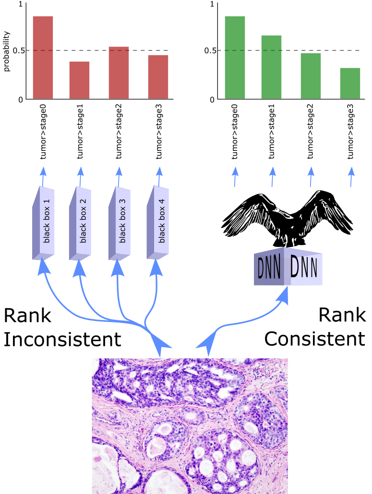

CONDOR tensorflow implementation for ordinal regression with deep neural networks.


About
CONDOR, short for CONDitional Ordinal Regression, is a method for ordinal regression with deep neural networks, which addresses the rank inconsistency issue of other ordinal regression frameworks.
It is compatible with any state-of-the-art deep neural network architecture, requiring only modification of the output layer, the labels, the loss function.
We also have condor implemented for pytorch.
This package includes:
- Ordinal tensorflow loss function:
CondorOrdinalCrossEntropy - Ordinal tensorflow error metric:
OrdinalMeanAbsoluteError - Ordinal tensorflow error metric:
OrdinalEarthMoversDistance - Ordinal tensorflow sparse loss function:
CondorSparseOrdinalCrossEntropy - Ordinal tensorflow sparse error metric:
SparseOrdinalMeanAbsoluteError - Ordinal tensorflow sparse error metric:
SparseOrdinalEarthMoversDistance - Ordinal tensorflow activation function:
ordinal_softmax - Ordinal sklearn label encoder:
CondorOrdinalEncoder

Cite as
If you use CONDOR as part of your workflow in a scientific publication, please consider citing the CONDOR repository with the following DOI:
@article{condor2021,
title = "Universally rank consistent ordinal regression in neural networks",
journal = "arXiv",
volume = "2110.07470",
year = "2021",
url = "https://arxiv.org/abs/2110.07470",
author = "Garrett Jenkinson and Kia Khezeli and Gavin R. Oliver and John Kalantari and Eric W. Klee",
keywords = "Deep learning, Ordinal regression, neural networks, Machine learning, Biometrics"
}